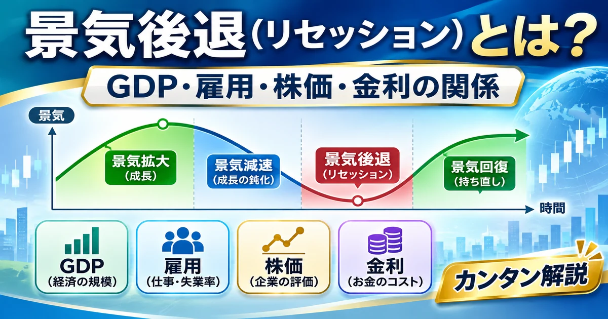

経済・金融の基礎 ／ マクロ経済
景気後退（リセッション）とは？GDP・雇用・株価・金利との関係を初心者向けに解説
最初に結論： 景気後退（リセッション）は、GDPや雇用、生産、消費などの経済活動が広い範囲で低下する局面です。GDPの2四半期連続マイナスは目安の一つですが、世界共通の正式判定ではありません。株価や金利への影響も一律ではありません。

目次
景気後退（リセッション）とは？
景気後退とは、経済全体の活動が広い範囲で落ち込む局面です。国内総生産（GDP）、雇用、個人消費、所得、生産、企業活動などに弱さが現れることがあります。
ただし、景気後退をどのように認定するかは国・機関によって異なり、単月の悪い数値だけで確定できません。
景気減速・景気後退・不況の違い
| 用語 | 基本的な意味 |
|---|---|
| 景気拡大 | 経済活動が全体として拡大する局面 |
| 景気減速 | 経済成長の勢いが弱まること |
| 景気後退 | 経済活動が広範囲に低下する局面 |
| 不況 | 経済活動が低迷している状態を表す一般的な表現 |
| 景気回復 | 落ち込んだ経済活動が改善する局面 |
例えば実質GDP成長率が前年比＋3％から＋1％に低下しても、成長そのものはプラスです。これは「景気減速」と表現され得ますが、それだけで景気後退とはいえません。景気の回復が始まっても、経済活動の水準が以前のピークに戻っていない場合もあります。
景気循環とは？
景気循環は、拡大して山を迎え、後退して谷に至り、その後回復する動きです。「山」は拡大から後退への転換点、「谷」は後退から拡大への転換点を指します。
景気の山・谷は単なる株価の高値・安値ではなく、経済活動の水準と変化をもとに判断されます。循環の長さ・深さ・原因は毎回異なり、規則的な周期ではありません。
GDPが2四半期連続でマイナスなら景気後退？
「実質GDP成長率が前期比で2四半期連続マイナス」は、景気後退を簡単に説明する際に使われることのある目安です。ただし、 全世界共通の正式な判定基準ではありません。
GDPは四半期統計であり、速報値が改定されることもあります。雇用・実質所得・消費・生産などの広がりや落ち込みの大きさも確認する必要があります。
日本と米国の景気後退判断の違い
日本：内閣府の景気基準日付
内閣府経済社会総合研究所は、生産や雇用などを組み合わせた景気動向指数を公表します。CI一致指数は景気変動の大きさやテンポを把握するための指標で、毎月の動きをそのまま山・谷とするものではありません。
景気基準日付（山・谷）は、CI一致指数の採用系列から作成する ヒストリカルDI を基礎に、景気動向指数研究会の議論を踏まえて経済社会総合研究所長が設定します。
米国：NBERの景気循環判定
米国では民間の研究機関NBERの景気循環判定委員会が広く参照される景気の山・谷を判定します。実質GDPだけでなく、移転所得を除く実質個人所得、雇用、実質個人消費、生産、実質販売などを総合的に検討します。
NBERは米国政府の統計作成機関ではありません。判定は十分なデータがそろってから遡って行われるため、景気後退の開始時点と発表時点は一致しません。
| 比較項目 | 日本 | 米国 |
|---|---|---|
| 判断主体 | 内閣府経済社会総合研究所（研究会の議論を踏まえる） | NBER景気循環判定委員会（民間研究機関） |
| 代表的な情報 | 景気動向指数のCI一致系列、ヒストリカルDI | 実質所得、雇用、消費、生産、販売、GDP・GDIなど |
| 山・谷の判断 | 一致系列の転換点を用いて景気基準日付を設定 | 経済活動の深さ・広がり・期間を総合判断 |
| GDP連続マイナス | それだけを正式判定としない | 2四半期連続マイナスを必須条件としない |
公式資料： 内閣府・景気基準日付 ／ NBER Business Cycle Dating 。
景気後退はなぜ起こる？
景気後退は一つの原因だけで起こるとは限りません。代表的な要因には次のようなものがあります。
- 金融引き締め・金利上昇： 借入費用が増え、消費や投資を抑制することがある。
- 個人消費・設備投資の減少： 需要が弱まり、生産や雇用に波及することがある。
- 金融システムの混乱・信用収縮： 企業や家計が資金を借りにくくなる。
- 資産価格の急落： 家計や企業の心理、担保価値に影響する。
- 原油価格などの供給ショック： コスト上昇や供給制約が生産を圧迫する。
- 海外経済の悪化： 輸出や企業収益を通じて国内に波及する。
需要ショックは支出・投資などの需要側を、供給ショックは原材料・物流・生産能力などの供給側を主に変化させます。いずれも必ず景気後退を引き起こすわけではありません。詳しくは 金融引き締めの解説 を参照してください。
GDP・雇用・消費・企業業績の関係
景気後退を理解するうえで重要なのは、GDP・企業活動・雇用・消費が相互につながっている点です。
- 需要の減速
- 企業の売上・生産の減少
- 設備投資や採用の抑制
- 雇用・所得環境の悪化
- 個人消費の減少
- 需要のさらなる減速
これは需要減速が波及する流れを単純化した一例です。実際には順序が異なり、各要因が同時に変化したり、政府支出や輸出が下支えしたりします。企業業績が悪化すると、株価や社債などの信用市場に影響する場合もあります。GDPは消費・投資・政府支出・純輸出などから構成されます。
景気後退と株価の関係
景気後退への懸念が強まると、企業の売上・利益の減少、業績予想の下方修正、投資家のリスク回避などを通じて株価に下押し圧力が生じることがあります。
一方、株価は将来の業績や金融政策への期待を先取りして動く場合があります。景気後退が正式に判定された頃には、株価がすでに大きく下落・反発している可能性もあります。金融緩和期待が株価を支える場合もありますが、 景気後退＝必ず株安、景気回復＝必ず株高ではありません。
関連： 決算発表の見方 ／ 株価が上下する仕組み 。
景気後退と政策金利・長期金利の関係
中央銀行は物価の安定や経済・金融の状況を踏まえ、金融政策を判断します。景気後退局面で利下げが検討されることはありますが、高インフレが続く場合などは対応が異なります。
| 用語 | 意味・主な決まり方 |
|---|---|
| 政策金利 | 中央銀行が金融政策の操作目標などとして設定・誘導する金利 |
| 短期金利 | 期間の短い資金取引の金利。政策金利の影響を受けやすい |
| 長期金利 | 期間の長い資金の金利。将来の短期金利見通しやタームプレミアムなどが影響 |
| 国債利回り | 国債価格と利払い・償還額などから決まる収益率。満期によって異なる |
景気後退と債券市場の関係
景気後退懸念で安全性を重視する投資家が増え、国債への需要が強まる場合があります。既発債の価格と利回りは原則として逆方向に動くため、国債価格の上昇は利回り低下につながります。
ただしインフレ、財政への懸念、国債発行・需給、タームプレミアムなどが強く意識されれば、景気後退懸念が高まっても長期金利が下がらない場合があります。
関連教材： 国債価格・利回り・長期金利の関係 ／ 債券市場 ／ 長期金利 。
景気後退とリスクオフの違い
| 用語 | 主な意味 |
|---|---|
| 景気後退 | 実体経済の活動が広い範囲で低下する局面 |
| リスクオフ | 投資家がリスクの高い資産を避ける傾向 |
| 信用収縮 | 貸し出しや信用供与が縮小すること |
リスクオフは市場の姿勢、景気後退は実体経済の局面です。景気後退が始まる前にもリスクオフは起こり得ます。詳しくは リスクオフとは？ をご覧ください。
景気後退と信用スプレッド
信用スプレッドとは、信用リスクなどを反映した債券利回りの差です。例えば社債利回りと同程度の残存期間の国債利回りとの差を比べます。
景気後退懸念から企業の返済能力への不安が高まると、社債の信用スプレッドが拡大することがあります。ただし流動性や市場需給にも左右され、拡大だけで景気後退を確定することはできません。
詳しくは 信用スプレッドとは？ をご覧ください。
逆イールドは景気後退の前兆？
イールドカーブは、国債などの満期ごとの利回りを結んだ曲線です。通常の右上がりと異なり、短期金利が長期金利を上回る状態を「逆イールド」と呼びます。
逆イールドは過去に景気後退への警戒材料として注目されてきました。しかし発生したから必ず景気後退になるわけではなく、逆イールドの解消そのものも確定サインではありません。金利差だけでなく、雇用・消費・生産・信用環境を組み合わせて確認します。
詳しくは イールドカーブとは？ をご覧ください。
景気後退の兆候を確認する経済指標
| 経済指標 | 主に確認すること |
|---|---|
| 実質GDP | 物価変動を除いた経済活動全体の変化 |
| 失業率 | 雇用環境の悪化や改善 |
| 非農業部門雇用者数 | 米国の雇用増減 |
| 個人消費 | 家計需要の強さ |
| 小売売上高 | 消費活動の一側面 |
| 鉱工業生産 | 製造業などの生産活動 |
| PMI・ISM景況指数 | 企業活動や景況感 |
| 景気動向指数 | 景気の方向性・変化のテンポ |
| イールドカーブ | 金利市場の景気・金融政策見通し |
| 信用スプレッド | 企業信用リスクへの警戒 |
指標の先行性・一致性・遅行性は国・統計の定義によって異なります。例えば日本の景気動向指数には先行・一致・遅行の系列がありますが、すべての指標を一律に分類できるわけではありません。速報値の改定、季節調整、前年同月比と前月比の違いにも注意が必要です。
景気後退とインフレの関係
需要が弱まると価格上昇圧力が緩和することがあります。ただし、原油高や供給制約が重なれば、景気が弱くても物価上昇が続く場合があります。
| 用語 | 意味 |
|---|---|
| インフレ | 物価水準が継続的に上昇すること |
| ディスインフレ | 物価は上昇しているが、上昇率が鈍化すること |
| デフレ | 物価水準が継続的に下落すること |
| スタグフレーション | 景気停滞とインフレが併存する状態 |
景気後退になれば必ずデフレになるわけではありません。詳しくは 物価指標の違いと関係 をご覧ください。
景気後退が投資信託・ETFに与える影響
| 投資対象 | 景気後退局面で確認する点 |
|---|---|
| 株式型 | 企業業績、株価評価、業種・地域の構成 |
| 債券型 | 金利変動、残存期間、発行体の信用リスク |
| 外貨建て資産 | 投資対象の値動きに加えて為替変動 |
| 複数資産に分散する商品 | 資産配分、各資産の相関、リバランス方針 |
株式型でも構成銘柄で影響は異なり、債券型でも金利上昇や信用悪化で価格が下落する場合があります。外貨建て資産は円換算の損益が為替に左右されます。「不況時には必ず特定の資産を買うべき」といった結論は導けません。
関連： 分散投資の基本 。
景気後退を理解するためのチェックリスト
ニュースを読むときは、次の項目を一つずつ確認すると整理しやすくなります。
- GDP成長率はどう推移しているか
- 雇用環境は悪化しているか
- 個人消費は減速しているか
- 企業業績はどう変化しているか
- 生産活動は弱まっているか
- 中央銀行の金融政策はどう変化しているか
- 長短金利差はどう推移しているか
- 信用スプレッドは拡大しているか
- 複数の指標が同じ方向を示しているか
- 景気後退の正式判定と市場予想を混同していないか
どれか一つに該当しただけで景気後退と断定せず、指標の改定や観測期間にも注意しましょう。
FAQ｜よくある質問
景気後退（リセッション）とは何ですか？
経済活動が広い範囲で低下する局面です。GDP、雇用、消費、生産、所得などを確認します。
景気減速と景気後退は何が違いますか？
景気減速は成長の勢いが弱まること、景気後退は経済活動そのものが広範囲に低下する局面です。
GDPが2四半期連続マイナスなら景気後退ですか？
簡便な目安にはなりますが、世界共通の正式判定ではありません。
日本では誰が景気後退を判断しますか？
内閣府経済社会総合研究所が、景気動向指数研究会での議論を踏まえ景気基準日付を設定します。
米国では誰が景気後退を判断しますか？
民間研究機関NBERの景気循環判定委員会による山・谷の判定が広く参照されます。
景気後退になると株価は必ず下がりますか？
必ずではありません。業績見通しや金融緩和期待、市場の織り込み状況で変わります。
景気後退になると金利は下がりますか？
必ずではありません。政策金利は物価など、長期金利は将来の金利見通しや需給などにも左右されます。
景気後退とリスクオフは同じですか？
異なります。景気後退は実体経済の局面、リスクオフは投資家のリスク回避姿勢です。
逆イールドが発生すると必ず景気後退になりますか？
必ずではありません。解消も景気後退確定のサインではありません。
景気後退の兆候はどの指標で確認できますか？
GDP、雇用、消費、生産、景気動向指数、金利差、信用スプレッドなどを組み合わせます。
景気後退とスタグフレーションは何が違いますか？
景気後退は経済活動の低下、スタグフレーションは景気停滞と物価上昇の併存です。
まとめ
- 景気後退は経済活動が広い範囲で低下する局面 で、景気減速とは区別します。
- GDPだけでなく雇用・消費・生産・所得を総合的に確認 し、日本と米国の判定方法の違いにも注意します。
- 株価・金利・債券・為替への影響は一律ではなく 、景気後退の原因や市場の織り込み状況で変わります。
単一指標で将来の景気を予測・断定せず、複数の情報を組み合わせて経済ニュースを読み解くことが大切です。
参考資料・一次情報
- 内閣府経済社会総合研究所：景気基準日付
- 内閣府経済社会総合研究所：景気動向指数
- 内閣府経済社会総合研究所：景気動向指数の利用の手引
- NBER：Business Cycle Dating
- NBER：景気循環判定FAQ
景気基準日付とNBERの判定方法は上記の公式説明を参照しています。記事内の図は仕組みを理解するための模式図であり、実際の経済データを示すものではありません。
ご利用にあたっての注意事項
本記事は金融教育・情報提供を目的としたものであり、特定の株式、ETF、投資信託、通貨などの売買を推奨・勧誘するものではありません。市場環境や制度、統計値は変化するため、最新の公的資料を確認してください。投資判断はご自身の責任で行ってください。